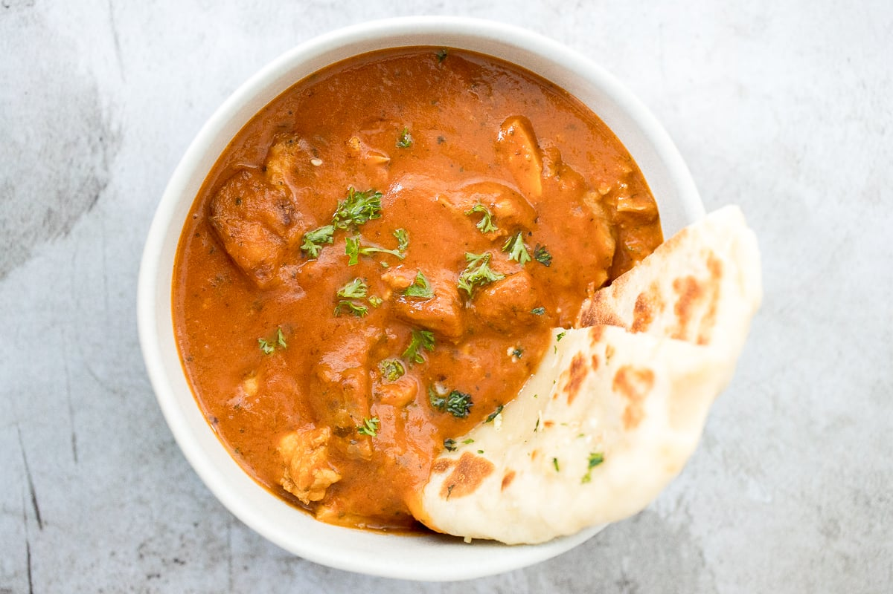
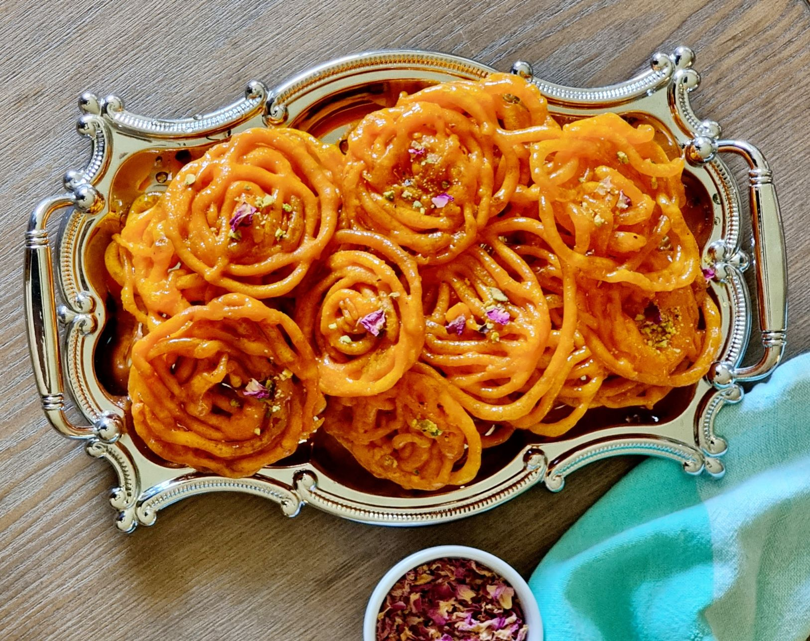

Chicken Briyani

Ingredients
- Half kg chicken 1.1lbs
- 3tablespoons plain yogurt
- 1 ¼ tablespoons ginger garlic paste
- ½ to 1 tablespoon garam masala
- ½ teaspoon salt
- ¼ teaspoon ground turmeric
- ½ to 1 teaspoon ground red chili powder
- 1 table spoon lemon juice
How to cook
Cooking chicken
- Heat ghee or oil in a heavy bottom pot or pressure cooker.
- Add thinly sliced onions. On a medium heat, fry them stirring often until uniformly light brown.
- Add marinated chicken & saute until it becomes pale for 5 minutes.
- Lower the flame completely. Cover and cook until the chicken is soft, tender and completely cooked.
Making chicken biryani
- Mix everything well. Sprade it evenly in a single layer
- Layer drained rice allover the chicken. To a separated bowl pour 3 cups of water
- And add ¼ to ½ teaspoons of salt. If cooking in a pot start with 3 cups of water in this stage
- Stir and taste the water . It must be slightly salty. Pour 2 cups of this across the side of the cooker or pot. Pour rest of the water gently.
- Put the rice gently on top.
- Add 2 tablespoon more mint leaves .Do not mix everything .(p.s you can add 2 tablespoons of fried onion and saffron soaked milk)
- If you are cooking with a pot cook on the medium heat until the rice is done. If the rice is undercooked pour ¼ to ½ boiling water in stage . Cook until the rice is perfectly done . If it is fully cooked covered it about 15 minutes.
- If you are cooking with a cooker cook for 1 whistle. Then remove the cooker from the burner to stop cooking further.
- When the pressure releases naturally, open the lid. Gently fluff with a fork
- At the top it will be with rice and at the bottom it will be with chicken
Butter Chicken

Ingredients
For the chicken marinade
- 28 oz (800g) boneless and skinless chicken thighs or breasts cut into bite-sized pieces
- 1/2 cup plain yogurt
- 1 1/2 tablespoons minced garlic
- 1 tablespoon minced ginger (or finely grated)
- 2 teaspoons garam masala
- 1 teaspoon turmeric
- 1 teaspoon ground cumin
- 1 teaspoon red chili powder
- 1 teaspoon of salt
For the sauce
- 2 tablespoons olive oil
- 2 tablespoons ghee (or 1 tbs butter + 1 tbs oil)
- 1 large onion, sliced or chopped
- 1 ½ tablespoons garlic, minced
- 1 tablespoon ginger, minced or finely grated
- 1 ½ teaspoons ground cumin
- 1 ½ teaspoons garam masala
- 1 teaspoon ground coriander
- 14 oz (400 g) crushed tomatoes
- 1 teaspoon red chili powder (adjust to your taste preference)
- 1 ¼ teaspoons salt (or to taste)
- 1 cup of heavy or thickened cream (or evaporated milk to save calories)
- 1 tablespoon sugar
- 1 ½ teaspoon kasoori methi (or dried fenugreek leaves)
How to cook
- First, mix your yogurt marinade together.
- Marinate chicken for 20 minutes, or overnight if time allows. (The longer it marinates, the more tender your chicken will be.)
- Sear chicken in a skillet or pan. Keep those charred bits on the pan to make your sauce. Browned bits = flavour. If you have too many burnt pieces stuck to the pan, you can discard some of them if you wish.
- Finally, make your curry sauce in the same skillet.
- In a bowl, combine chicken with all of the ingredients for the chicken marinade; let marinate for 30 minutes to an hour (or overnight if time allows).
- Heat oil in a large skillet or pot over medium-high heat. When sizzling, add chicken pieces in batches of two or three, making sure not to crowd the pan. Fry until browned for only 3 minutes on each side. Set aside and keep warm. (You will finish cooking the chicken in the sauce.)
- Heat butter or ghee in the same pan. Fry the onions until they start to sweat (about 6 minutes) while scraping up any browned bits stuck on the bottom of the pan.
- Add garlic and ginger and sauté for 1 minute until fragrant, then add ground coriander, cumin and garam masala. Let cook for about 20 seconds until fragrant, while stirring occasionally.
- Add crushed tomatoes, chili powder and salt. Let simmer for about 10-15 minutes, stirring occasionally until sauce thickens and becomes a deep brown red colour.
- Remove from heat, scoop mixture into a blender and blend until smooth. You may need to add a couple tablespoons of water to help it blend (up to 1/4 cup). Work in batches depending on the size of your blender.
- Pour the puréed sauce back into the pan. Stir the cream, sugar and crushed kasoori methi (or fenugreek leaves) through the sauce. Add the chicken with juices back into the pan and cook for an additional 8-10 minutes until chicken is cooked through and the sauce is thick and bubbling.
Chicken Tikka Masala

Ingredients
For the chicken marinade:
- 28 oz (800g) boneless and skinless chicken thighs cut into bite-sized pieces
- 1 cup plain yogurt
- 1 1/2 tablespoons minced garlic
- 1 tablespoon ginger
- 2 teaspoons garam masala
- 1 teaspoon turmeric
- 1 teaspoon ground cumin
- 1 teaspoon Kashmiri chili (or 1/2 teaspoon ground red chili powder)
- 1 teaspoon of salt
For the sauce:
- 2 tablespoons of vegetable/canola oil
- 2 tablespoons butter
- 2 small onions (or 1 large onion) finely diced
- 1 1/2 tablespoons garlic finely grated
- 1 tablespoon ginger finely grated
- 1 1/2 teaspoons garam masala
- 1 1/2 teaspoons ground cumin
- 1 teaspoon turmeric powder
- 1 teaspoon ground coriander
- 14 oz (400g) tomato puree (tomato sauce/Passata)
- 1 teaspoon Kashmiri chili (optional for colour and flavour)
- 1 teaspoon ground red chili powder (adjust to your taste preference)
- 1 teaspoon salt
- 1 1/4 cups of heavy or thickened cream (use evaporated milk for lower calories)
- 1 teaspoon brown sugar
- 1/4 cup water if needed
- 4 tablespoons Fresh cilantro or coriander to garnish
How to cook
- In a bowl, combine chicken with all of the ingredients for the chicken marinade; let marinate for 10 minutes to an hour (or overnight if time allows).
- Heat oil in a large skillet or pot over medium-high heat. When sizzling, add chicken pieces in batches of two or three, making sure not to crowd the pan. Fry until browned for only 3 minutes on each side. Set aside and keep warm. (You will finish cooking the chicken in the sauce.)
- Melt the butter in the same pan. Fry the onions until soft (about 3 minutes) while scraping up any browned bits stuck on the bottom of the pan.
- Add garlic and ginger and sauté for 1 minute until fragrant, then add garam masala, cumin, turmeric and coriander. Fry for about 20 seconds until fragrant, while stirring occasionally.
- Pour in the tomato puree, chili powders and salt. Let simmer for about 10-15 minutes, stirring occasionally until sauce thickens and becomes a deep brown red colour.
- Stir the cream and sugar through the sauce. Add the chicken and its juices back into the pan and cook for an additional 8-10 minutes until chicken is cooked through and the sauce is thick and bubbling. Pour in the water to thin out the sauce, if needed.
- Garnish with cilantro (coriander) and serve with hot garlic butter rice and fresh homemade Naan bread.
Lamb Vindaloo

Ingredients
- 1.3 kg/3lb boneless lamb shoulder, cut into roughly 4cm/1¾in chunks
- 100ml/3½fl oz red wine vinegar
- 2 tbsp sunflower oil
- 2 tsp sea salt flakes
- 500g/1lb 2oz potatoes, peeled and cut into roughly 2.5cm/1in pieces
For the sauce
- 125ml/4½fl oz sunflower oil
- 4 onions, 3 finely sliced and 1 chopped
- 6 garlic cloves, roughly chopped
- 3 long red chillies (do not deseed), roughly chopped
- 25g/1oz fresh root ginger, peeled, roughly chopped
- 1 tbsp English mustard powder
- 1 tbsp ground cumin
- 1 tbsp ground coriander
- 1 tbsp ground paprika
- 2 tsp ground turmeric
- 2 tsp cayenne pepper
- 1 tsp ground cinnamon
- 2 tsp sea salt flakes
- 2 bay leaves
How to cook
- Trim the lamb, discarding any really hard lumps of fat and sinew. Mix the vinegar, vegetable oil and salt in bowl until well combined. Add the lamb and turn to coat in the marinade. Cover and chill in the fridge for two hours.
- Preheat the oven to 180C/350F/Gas 4.
- For the sauce, heat three tablespoons of the sunflower oil in a large heavy-based frying pan and cook the sliced onions very gently over a medium-low heat for 15 minutes until softened and lightly browned, stirring occasionally.
- While the sliced onions are cooking, put the remaining chopped onion, garlic, chillies, ginger, mustard powder, cumin, coriander, paprika, tumeric, cayenne pepper and cinnamon in a food processor and blend to a purée.
- Stir the purée into the fried onions. Add two tablespoons of oil and cook together for five minutes, or until thickened and beginning to colour. Remove the mixture from the pan and place into a casserole dish.
- Drain the lamb in a colander and reserve the marinade. Return the frying pan to the heat and add two tablespoons of the remaining oil. Fry the lamb in four or five batches over a medium-high heat, turning occasionally until lightly browned. Add a little extra oil if necessary. Add the lamb to the casserole.
- Pour the reserved marinade and 500ml/17fl oz water into the casserole dish. Add the salt and bay leaves and bring to a simmer. Cover the surface of the curry with a piece of greaseproof paper, then cover with a lid. Cook in the oven for 45 minutes.
- Remove the casserole from the oven and stir the potato chunks into the curry, re-cover with the greaseproof paper and the lid and continue to cook for a further hour or until the lamb and potatoes are very tender. Season, to taste, with salt.
- Serve with spoonfuls of yogurt, chopped coriander and rice or wamed naan bread.
Pani Puri

Ingredients
For Pani Puri Stuffing
- 2 to 3 potatoes – medium-sized
- 1 onion – small to medium-sized, optional
- 1 to 1.5 tablespoons chopped coriander leaves (cilantro)
- 1 teaspoon roasted cumin powder
- 1 teaspoon chaat masala powder
- ¼ teaspoon red chili powder – optional
- black salt or regular salt or pink salt, as required
For Pani Recipe
- ½ cup chopped mint leaves – tightly packed
- 1 cup chopped coriander leaves – tightly packed (cilantro)
- 1 inch ginger – chopped
- 2 to 3 green chilies – chopped (for a less spicy pani, add about 1 green chili)
- 1 tablespoon tamarind – tightly packed
- 3.5 to 4 tablespoons jaggery powder or grated/chopped jaggery or sugar, add as required
- 1 teaspoon roasted cumin powder
- 1 teaspoon chaat masala powder
- ⅓ cup water for blending
- 1 to 1.25 cups water to be added later, add water as per the consistency you want
- 1 to 1.5 tablespoons boondi (fried tiny gram flour balls), optional
- black salt or regular salt, add as required
How to cook
- Rinse 1 cup tightly packed coriander leaves, ½ cup tightly packed mint leaves, 2 to 3 green chilies and 1 inch ginger very well in water a few times. Drain all the water.
- Peel the ginger and roughly chop it. Also chop the green chilies. Roughly chop the coriander leaves and mint leaves. Don’t use the stem of mint leaves as they can make the spiced water have a bitter taste. Only use the fresh mint leaves.
- Add coriander leaves, mint leaves, ginger and green chili in a grinder or blender jar. For a less spicy pani you can add just 1 chopped green chilli.
- Add 1 tablespoon tightly packed tamarind and 3.5 to 4 tablespoons jaggery powder or grated jaggery.
- If you do not have tamarind, then you can use 2 tablespoons lemon juice. You can also use equal amounts of jaggery and dates. So you can add 2 tablespoons crumbled jaggery and 2 tablespoons chopped dates.
- Now add 1 teaspoon roasted cumin powder, 1 teaspoon chaat masala and salt as per taste. You can also use a mix of black salt and pink salt or regular salt. I personally prefer to use either black salt or edible rock salt.
- Add ⅓ cup water and grind to a smooth consistency.
- Remove the chutney to a bowl or a small pan.
- Now add ½ cup water in the grinder jar and swirl the jar so that the chutney at the sides of the jar gets mixed with the water.
- Add this water to the bowl containing the chutney.
- Then add ½ to ¾ cup water. You can add less or more water depending on the consistency you want. But do not add too much water as then the taste and flavor of the spiced water reduces. Also check the taste and if required you can add some more jaggery or salt as required.
- Mix very well. Cover the pan and refrigerate the pani. Before refrigerating you can also add 1 to 1.5 tablespoons of salted boondi.
- Boondi also gives a good taste. It can also be made at home or purchased easily from grocery stores.
Making potato filling for pani puri
- Boil 2 to 3 medium-sized potatoes. You can boil or steam the potatoes in a pan, instant pot or stovetop pressure cooker adding water as required.
- When warm, peel them and chop them into small cubes. You can also add some steamed or boiled moong sprouts. Some finely chopped onions can also be added. I have added 1 small-sized finely chopped onion.
- Add 1 to 1.5 tablespoon chopped coriander leaves.
- Then add ¼ teaspoon red chili powder, 1 teaspoon chaat masala and 1 teaspoon roasted cumin powder. Also add salt as per taste. Stir and mix very well. Keep aside.
Assembling Pani Puri
- Keep everything ready before you start assembling the pani puri. The potato filling, pooris and the spiced water.
- Add a few teaspoons of sweet chutney or as per your choice.
- Then add a few teaspoons of the green spiced water or as per your choice.
- The pani puri is ready to serve. Pop in your mouth, eat every bite and enjoy the burst of various flavors and textures.
India Traditional Desserts
Ladoo
Ingredients
- 2 cup besan
- ½ cup ghee
- 1 cup sugar
- 4 to 6 green cardamoms
- 3 to 4 tablespoons cashews
How to make
- Firstly, in a large Kadai heat ½ cup ghee and add 2 cups besan.
- Roast on low flame until the besan is well combined with ghee. make sure to use coarse besan for a grainy texture.
- Continue to roast on low flame. if the mixture turns dry, add a tbsp of more ghee.
- After 20 minutes, the besan starts to release ghee.
- Continue to roast until the besan turns golden brown and grainy. it may take approximately 30 minutes
- Transfer the mixture to a large bowl, allowing to cool slightly.
- Meanwhile, dry roast 2 tbsp melon seeds and 2 tbsp cashew.
- Roast on low flame until the nuts turn crunchy.
- Add the roasted nuts to the roasted besan ghee mixture.
- Take 1 cup of sugar and 4 pods of cardamom in a blender. you can alternatively use tagar or boora.
- Blend to a fine powder without adding any water.
- Once the besan is cooled (slightly warm) add powdered sugar.
- Mix well making sure everything is well combined. do not add sugar if the mixture is hot, as it will melt the sugar and makes the mixture watery.
- Prepare a ball-sized ladoo adjusting sugar as required.
Jalebi

Ingredients
- 3 cup all-purpose flour
- 2 cup hung curd
- 1/2 cup ghee
- 3 cup sugar
- 5 strand saffron
- 1/2 teaspoon powdered green cardamom
- 1/2 cup corn flour
- 1 1/2 pinch baking soda
- 2 cup sunflower oil
- 3 cup water
- 4 drops rose essence
- 1/2 teaspoon edible food color
How to make
- To make this easy Jalebi recipe, mix together all-purpose flour, cornflour and baking soda in a bowl. Now, add ghee and food colour to the above mixture and give a mix. To make a thick batter add hung curd and water. Mix well until it is thick but has a slightly flowing consistency. Keep it aside for 8-10 hours to ferment. This step is important to give that unique "khatta" taste to Jalebi. To make the sugar syrup, heat water in a pan over medium flame. Add sugar and mix until fully dissolved. Simmer the syrup until it attains one-string consistency. Add saffron, cardamom powder and rose essence. Stir well to prepare the final sugar syrup. This will be used to soak the jalebis and give them their signature sweetness.
- Now, heat oil in a pan over medium flame for deep frying. Fill the jalebi batter in a muslin cloth and pierce a small hole in the cloth. You can even use a squeezy bottle (ketchup bottles with a small nozzle on top) to make jalebis. Now just squeeze the muslin cloth to make concentric circles. Move from inside to outside to make perfect circles. Fry till jalebis from both the sides until they are crispy in texture and golden in colour.
- Soak the jalebis in sugar syrup for 3-4 minutes in warm sugar syrup. Ensure that the sugar syrup is warm and not very hot, as this will make the jalebis limp. Don't soak the jalebis for too long if you wish to retain their crispiness. Now, remove the jalebis from the syrup and place it on a tray lined with butter paper or foil. Decorate with silver foil (optional) and serve the jalebis hot, warm or at room temperature with creamy Rabri. Note: To make the jalebi even more delicious, add a little bit of ghee to the batter, this will give your jalebi that perfect aroma. To the crispy Jalebi, don't forget to ferment the batter overnight.
kulfi
Ingredients
- 3 cups whole milk
- 75 to 80 grams Mawa (khoya or evaporated milk) – about 3.5 to 4 tablespoon mawa
- 3 tablespoons raw sugar or white sugar – adjust as required.
- 1.5 tablespoons Rice flour or 1 tablespoon cornstarch
- 3 tablespoons milk – to dissolve the rice flour or cornstarch
- 20 pistachios – shelled and unsalted
- 20 almonds
- ½ teaspoon cardamom powder or 4 green cardamoms powdered in a mortar-pestle and husks removed
- 1 teaspoon rose water or kewra water (pandanus water) or a drop of kewra essence or rose essence
- 25 to 30 saffron strands – crushed
How to make
- In a heavy and wide pan or kadai (Indian wok), heat 3 cups milk on a low flame for at least 18 to 20 minutes. The milk will reduce and thicken in this period of time.
- Do remember to stir the milk often so that it does not scorch or burn at the bottom of the pan.
- Dissolve 1.5 tablespoons of rice flour or 1 tablespoon cornstarch with 3 tablespoons of milk. Mix very well. Set aside.
- Grate 75 to 80 grams of khoya (mawa) or crumble it very well to a fine texture. There should be no large pieces or lumps.
- Process the nuts (20 shelled unsalted pistachios and 20 almonds) to a semi-fine consistency in a dry grinder or in a mortar-pestle. Keep them aside.
Make Kulfi Base
- After 18 to 20 minutes, add 3 tablespoons of sugar to the reduced milk and mix well. Keep scraping the milk solids from the sides and reincorporating them into the simmering milk.
- When the sugar has dissolved and after 3 to 4 minutes, add the rice flour or cornstarch paste. Keep stirring while adding the rice flour paste so that no lumps are formed.
- Continue stirring for several minutes until the milk thickens. If any small lumps form, then break them with the spatula or spoon.
- After 4 to 5 minutes, when the mixture has thickened, add the grated khoya (mawa), powdered almonds & pistachios, and ½ teaspoon cardamom powder (or about 4 green cardamoms crushed in a mortar-pestle).
- Stir very well and simmer for a minute or two on a low heat. Keep stirring so that the khoya (evaporated milk solids) is evenly distributed.
- Switch off the heat. Add 1 teaspoon rose water or kewra water (pandanus water) and crushed saffron – about 25 to 30 saffron strands that have been crushed.
- Taste test the mixture and add more sugar if needed according to your taste preferences.
Freeze the Kulfi
- Let the mixture cool at room temperature, then pour the mixture in kulfi moulds, serving bowls, a tray or in shot glasses. Be sure to scrape the milk solids from the sides of the pan and add them to the mixture.
- Cover with lids or aluminum foil and freeze overnight or for a day until the kulfi is frozen and set.